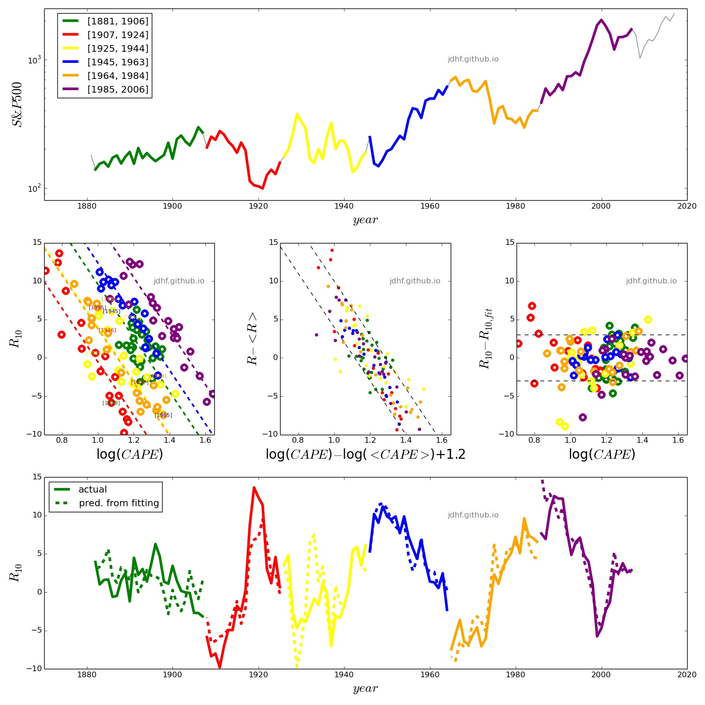

CAPE as a predictor of S&P500 10yr returns?

R10 vs. CAPE: S&P500 10yr return
vs. Cyclically
Ajusted Price-to-Earnings Ratio. The whole data set is
extracted
from multpl.com. Color
code identifies different time periods.
(1) Time series of the S&P500.
(2) S&P500 10yr return (R10) vs. CAPE. Linear fits are shown for each period.
Linear fits are of the form R10 = α
log( CAPE / CAPEeq ) in which α
is fixed to α=−35 and CAPEeq is fitted
for each period.
(3) R10 vs. CAPE sequences re-shifted to R10=0 and CAPE=1.2.
(4) Residuals from the linear fits of R10 vs. CAPE.
(5) Observed and predicted R10 derived from the CAPE.